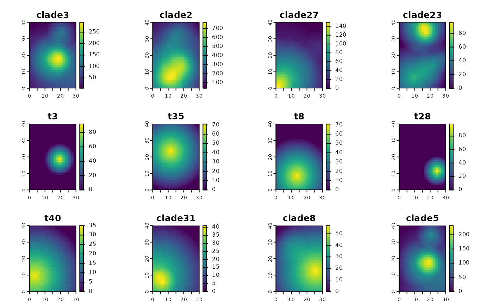

This function generates a simple phylospatial object that can be used for testing other functions
in the package. It is not intended to be realistic.
Arguments
- n_tips
Number of terminals on phylogeny.
- n_x
Number of raster cells in x dimension of landscape.
- n_y
Number of raster cells in y dimension of landscape.
- data_type
Community data type for simulated ranges: either "probability" (default), "binary", or "abundance".
- spatial_type
Either "raster" or "none".
- seed
Optional integer to seed random number generator.
Value
phylospatial object, comprising a random phylogeny and community matrix in which each terminal has a
circular geographic range with a random radius and location. The spatial reference data is a SpatRaster.
Examples
# using all the defaults
ps_simulate()
#> `phylospatial` object
#> - 18 lineages across 400 sites
#> - community data type: probability
#> - spatial data class: SpatRaster
#> - dissimilarity data: none
# specifying some arguments
plot(ps_simulate(n_tips = 50, n_x = 30, n_y = 40, data_type = "abundance"), "comm")
